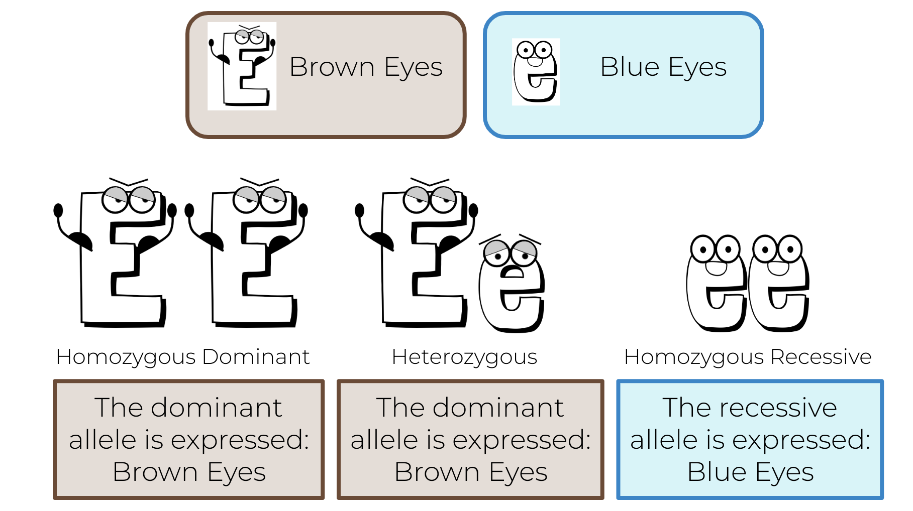
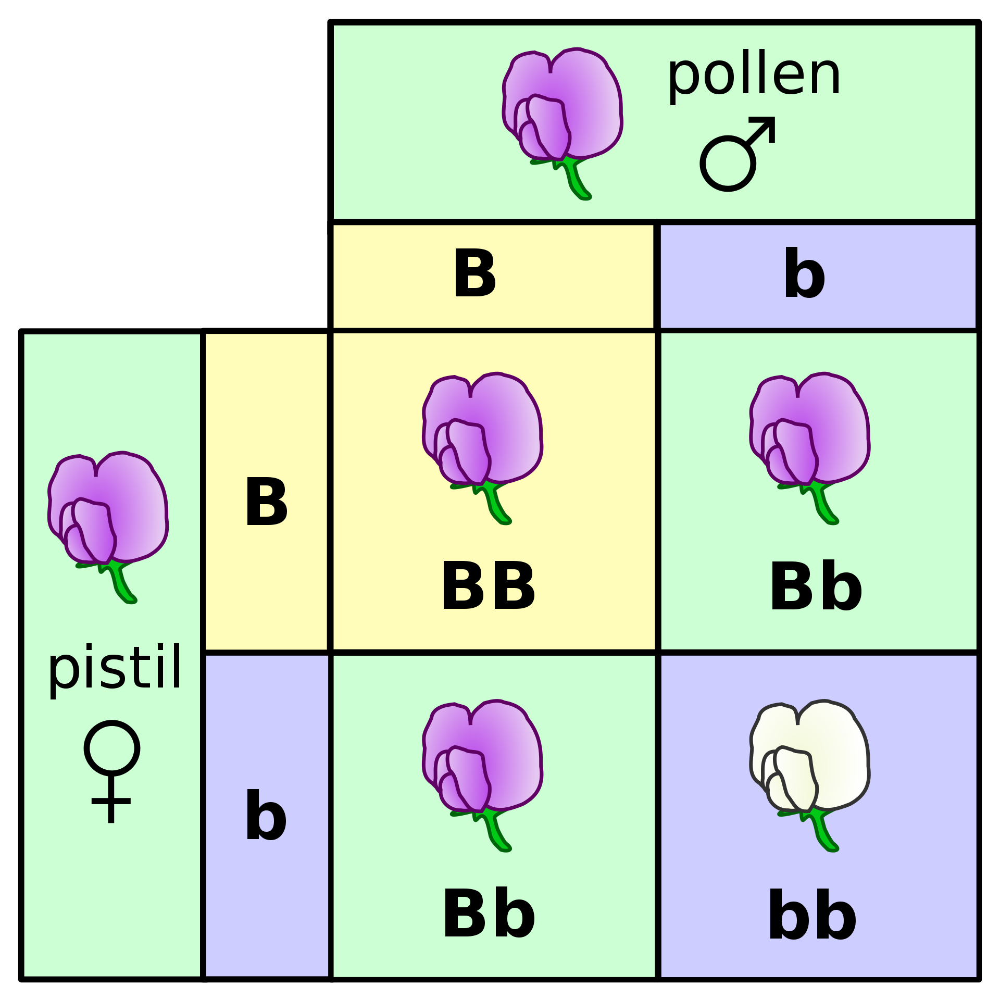
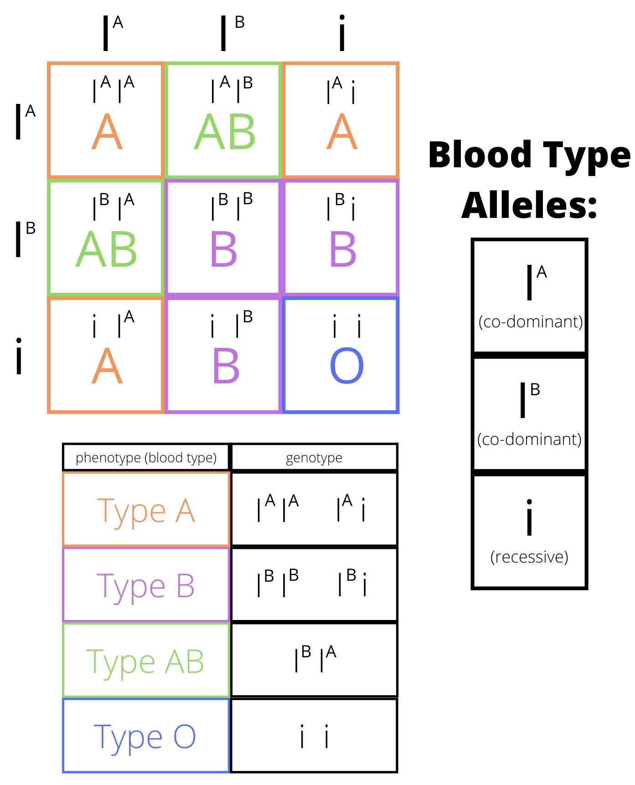
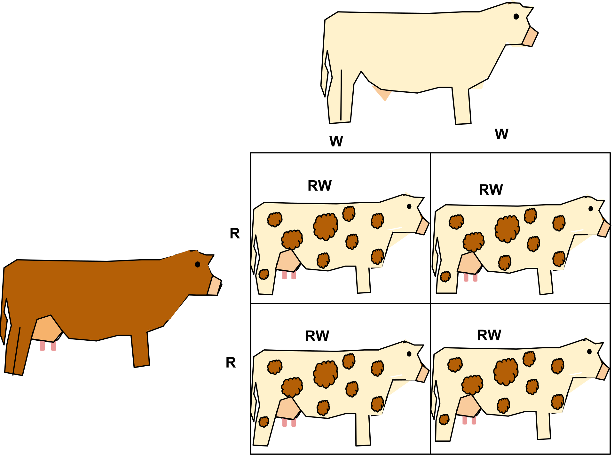

DNA (deoxyribonucleic acid) is what makes up our genes. It is a thread-like structure composed of multiple bases called “nucleotides” and has the shape of a “double-helix.” How our DNA is programmed allows us to have different traits, as different sequences within the DNA code for different proteins to be made, thus giving us our physical traits1.
Gene Expression
What is DNA?

Alleles
Alleles are different types of genes that have slight differences. They can be considered either “recessive” or “dominant.”
The words “recessive” and “dominant” mean that the phenotype (physical trait) of a recessive allele can be hidden if it is paired with a “dominant” allele. However, if there is no dominant allele present, the phenotype of the recessive alleles are expressed2.
One example of this are blood types. A and B blood types have dominant alleles over O blood types3.

(“Genotypes and Phenotypes” by SadiesBurrow. Licensed under CC BY-SA 4.0/resized from original)
{kind=link}
Punnet Squares
One way to determine the chances of the genotype an offspring will have is through Punnet squares. Their format may be 2x2, 4x4, and more4. Here is an example of a 2x2 version:

{kind=link}
There are many forms of inheritance, which include: Codominance, Incomplete dominance, and multiple alleles.
Sometimes phenotypes aren't always expressed by only one dominant allele or two recessive alleles. Sometimes a mix of two dominant alleles can be expressed, or a gene can have more than two alleles.
Multiple Alleles: When there are more than two alleles that code for a gene. An example of this is blood type, with there being IA, IB, and I (two Is result in an O blood type)5.

(“ABO Blood Group Phenotypes” by Maliayee. Licensed under CC BY-SA 4.0/resized from original)
{kind=link}
Codominance: Situation in which two alleles are expressed phenotypically by an equal degree. An example of this are roan cows, which are spotted (as pictured below)6.

(“Co-dominance in Roan Cattle” by Hhughes15. Licensed under CC BY-SA 4.0/resized from original and turned into png)
{kind=link}
Incomplete Dominance: Phenomenon in which one allele does not completely hide the other allele. The result is like a blend of the two. Incomplete dominance is different than codominance because of how in codominance both alleles are expressed and are not blended7. The image below is an example of incomplete dominance.

(“Incomplete dominance” by Spencerbaron. Licensed under CC BY-SA 3.0/resized from original and turned into png)
{kind=link}